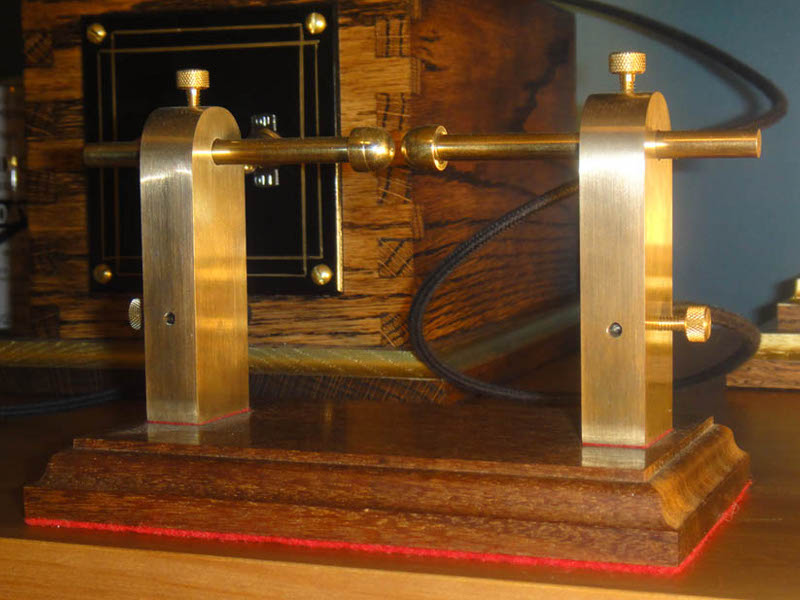

Spark Gap Spark Gap
Spark Gap Spark GapA spark gap is an extremely simple, though important electrical device; it acts as a switch in oscillating circuits, making it a vital component in tesla coils and in early radio transmitters.
I made this spark gap for my tesla coil, and it works just fine. The uprights are machined from aluminum bronze, the electrodes brass, and the base is Ipe, sometimes called Brazilian Walnut. I discovered in the making of the base that the wood is so oily, not only as to require no finish, but also as to completely retard the curing of polyurethane varnish.
Created by Sean Corron, April 2, 2011.